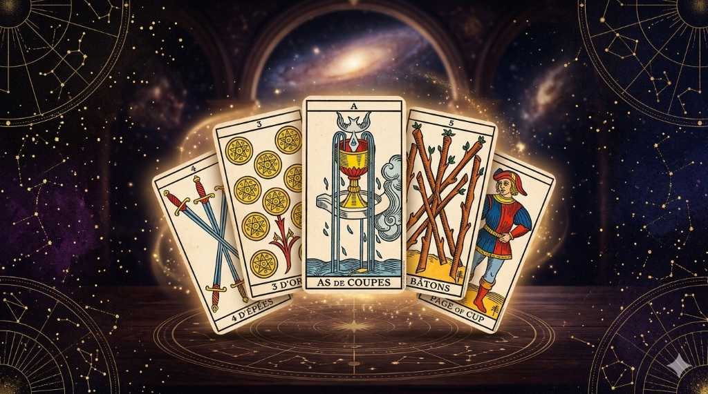

El Tarot de Marsella es la baraja madre de la cartomancia occidental. Sus Arcanos Mayores —como El Mago, La Emperatriz o El Mundo— son fácilmente reconocibles por sus ricas ilustraciones llenas de personajes y detalles medievales. Sin embargo, cuando nos adentramos en el territorio de los Arcanos Menores, la cosa cambia.
Frente a las 56 cartas que componen los palos de Copas, Bastos, Espadas y Oros, muchos principiantes se sienten perdidos. Al no mostrar escenas dinámicas con personas, sino patrones geométricos y numéricos, es común pensar: ¿Cómo voy a recordar el significado de todo esto?
El secreto del Tarot de Marsella es que no necesitas memorizar 56 definiciones de memoria. Este mazo se lee a través de un código perfecto que une dos elements: la energía del palo (el elemento) y el significado del número (la numerología). Si aprendes a combinarlos, sabrás leer cualquier carta al instante.
Los 4 Palos: ¿Qué aspecto de la vida maneja cada uno?
Para entender qué terreno estás pisando en una lectura, lo primero es identificar el palo de la carta. Cada uno de ellos está ligado a un elemento de la naturaleza y a una faceta de la experiencia humana:
- Copas (Elemento Agua): Representan el mundo emocional. Hablan de los sentimientos, las relaciones de pareja, la familia, la amistad, el amor propio y la intuición sutil.
- Oros (Elemento Tierra): Gobiernan el plano material. Están relacionados con el dinero, el trabajo, los negocios, la salud física, las propiedades y todo aquello que se puede tocar, concretar y construir a largo plazo.
- Espadas (Elemento Aire): Manejan el plano mental. Simbolizan los pensamientos, el intelecto, la comunicación, las dudas, las leyes, las verdades dolorosas y los conflictos verbales.
- Bastos (Elemento Fuego): Son la pura energía vital. Hablan de la pasión, la creatividad, los proyectos que se inician, la acción decidida, el instinto y el impulso sexual primario.
Guía de Consulta rápida: Si en algún momento tienes dudas sobre la interpretación exacta de una carta de Oros, Copas, Bastos o Espadas, recuerda que puedes buscar su desglose profundo en nuestro Libro del Tarot (Grimorio).
El Código Numérico: El viaje del 1 al 10
En el Tarot de Marsella, los números nos indican en qué etapa de desarrollo y maduración se encuentra la energía elemental del palo. Aquí tienes el mapa numérico básico:
- Los Ases (1): El inicio puro. Es el potencial, la semilla cósmica, la oportunidad que se presenta en bruto pero que aún debe desarrollarse y pulirse.
- Los Dos (2): La dualidad y la gestación. Es un momento de acumulación pasiva, de espera, de mirar hacia adentro o de elegir con calma entre dos opciones.
- Los Tres (3): La primera explosión. Representa la acción directa, el entusiasmo inicial, la creatividad desbordada, los primeros frutos y el movimiento.
- Los Cuatros (4): La estabilidad. Es la base sólida, la seguridad, el orden absoluto y el descanso merecido (aunque con el riesgo de caer en la monotonía y la rigidez).
- Los Cincos (5): El desafío o la crisis. Rompe la rigidez del cuatro para introducir un cambio sumamente necesario, una prueba de voluntad o una nueva perspectiva.
- Los Seis (6): La armonía y el placer. Representa la belleza, el equilibrio recobrado, el reencuentro con los demás y el disfrute pacífico.
- Los Sietes (7): La acción consciente. Es el número del éxito dinámico, el avance con determinación, la conquista de metas y el esfuerzo enfocado.
- Los Ochos (8): La perfección y la justicia. Representa el equilibrio perfecto, la concentración interna, el orden y la organización minuciosa.
- Los Nueves (9): La transición y el desapego. El final del ciclo está muy cerca; es un momento de crisis positiva, madurez profunda y preparación solitaria para lo nuevo.
- Los Dieces (10): La culminación. Representa la totalidad, el cierre absoluto de una gran etapa y la preparación inminente para volver a empezar desde el As.

El Arte de Combinar: Un ejemplo práctico
¿Cómo se traduce esto en una lectura real? Es tan sencillo como sumar el concepto del número con la naturaleza del palo. Imagina que en tu tirada aparece el Cuatro de Copas:
- Tomamos el significado del 4 (Estabilidad, seguridad, bases firmes).
- Lo unimos al significado de las Copas (Emociones, relaciones).
- Resultado: La carta nos habla de una situación emocional o de pareja completamente estable y segura. Sin embargo, al ser una estructura tan cerrada, nos advierte sobre el peligro latente de caer en el aburrimiento, la rutina o el estancamiento por falta de estímulos externos.
¿Y si sale el As de Bastos?
- Sumamos el As (1) (Semilla, potencial de inicio, oportunidad) con los Bastos (Proyectos, pasión, fuego, instinto).
- Resultado: El universo te está otorgando una inyección tremenda de energía vital para arrancar un nuevo proyecto profesional o creativo con muchísima fuerza.
Conclusión: La geometría sagrada en tus manos
El Tarot de Marsella no necesita disfraces ni dibujos complejos para hablarte. Su belleza reside en su pureza geométrica y abstracta. Cuando dejas de ver los Arcanos Menores como simples dibujos repetitivos y empiezas a verlos como un mapa numérico vivo, la lectura fluye de forma natural y directa desde tu subconsciente.
Ponlo en práctica: ¿Quieres ver cómo interactúan los números y los elementos en una respuesta real? Despeja tu mente de dudas, formula tu pregunta en nuestro Oráculo Interactivo y observa con nuevos ojos el patrón de las cartas que el destino elija para ti hoy.
Lecturas Recomendadas
Para aquellos que deseen dominar el arte de la estructura y la geometría sagrada de este mazo a nivel experto, la obra "La Vía del Tarot" de Alejandro Jodorowsky es considerada la biblia contemporánea de este sistema. Puedes adquirir esta guía de referencia directa aquí: Comprar La Vía del Tarot en Amazon.
También disponéis de esta otra maravillosa guía introductoria: "Tarot para principiantes", una guía sencilla para aprender a leer las cartas del tarot, diseñar tiradas básicas y desarrollar el potencial psíquico y de adivinación. Puedes conseguirla aquí: Comprar Tarot para Principiantes en Amazon.